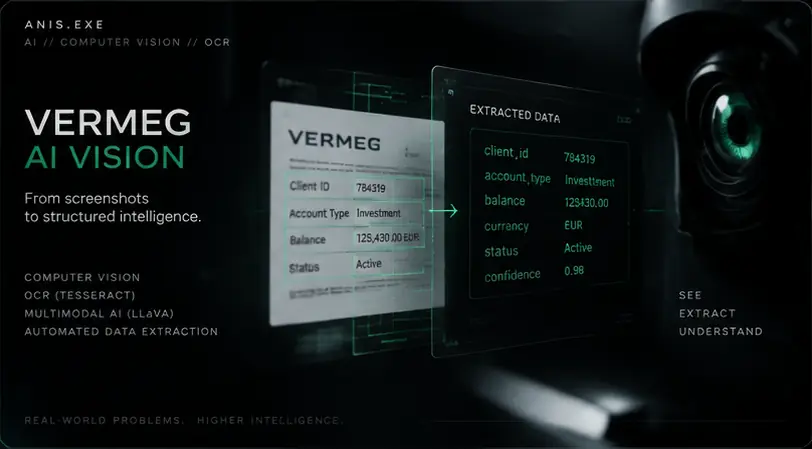
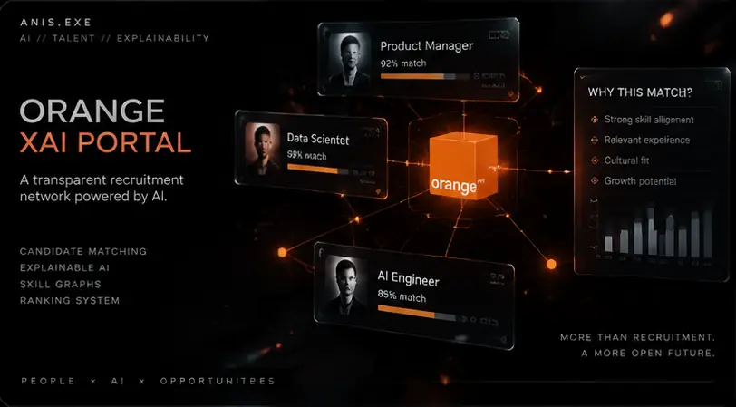
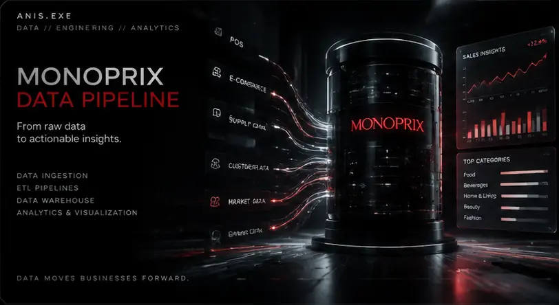
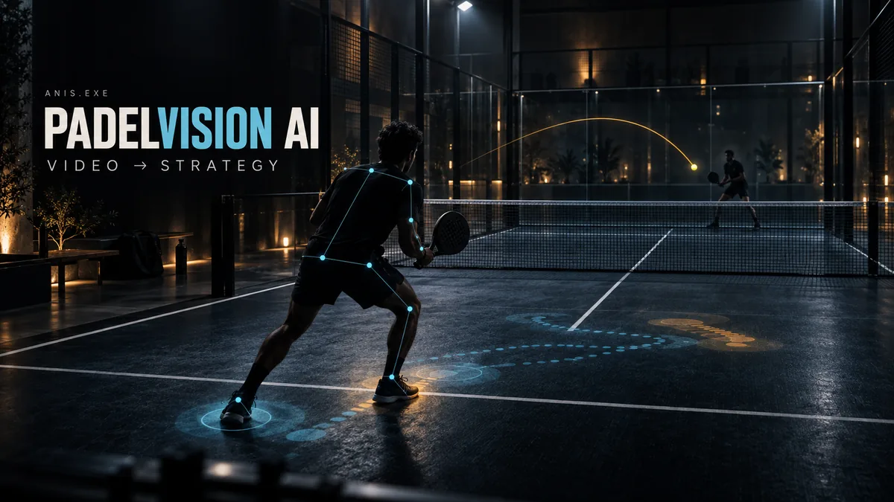
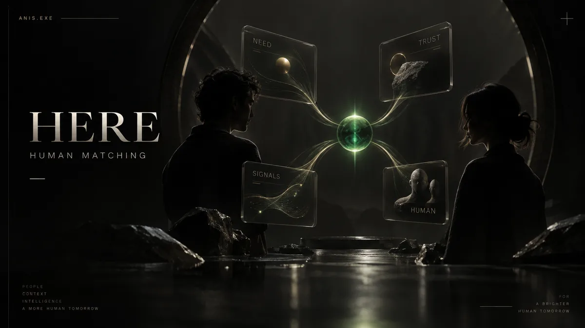
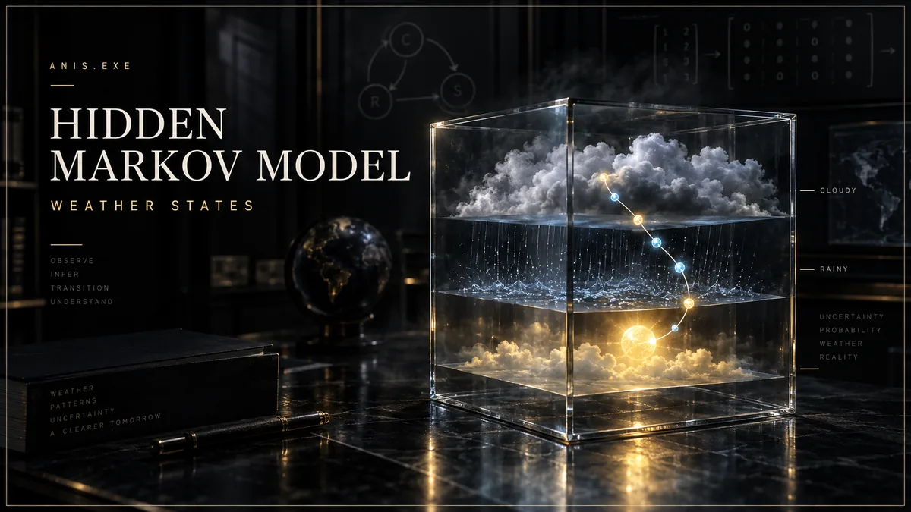
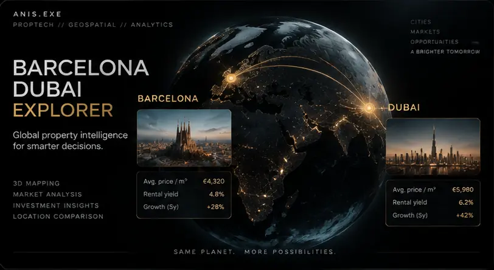
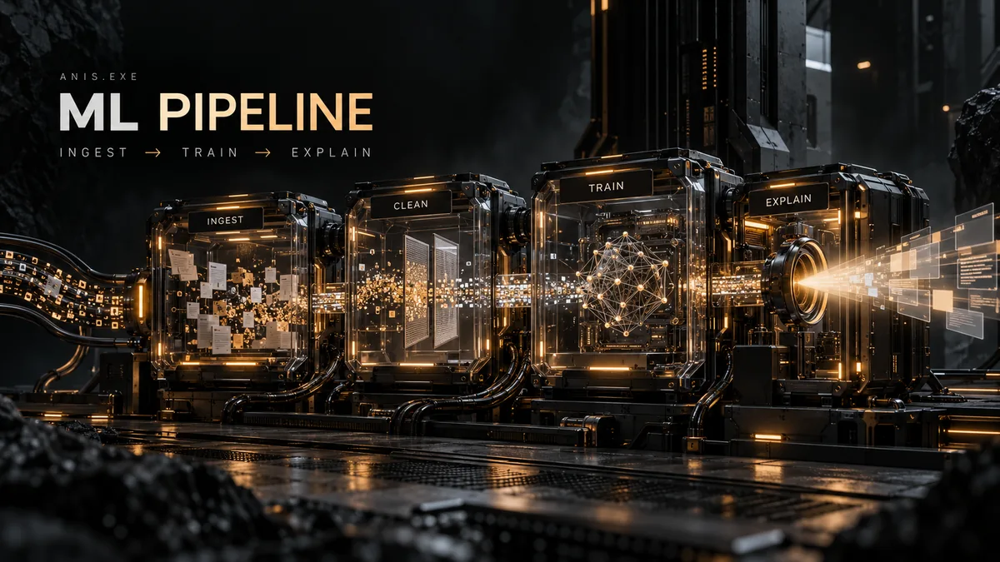
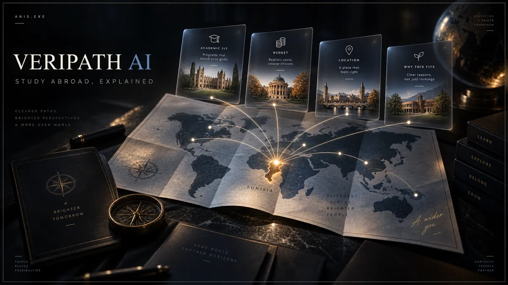

ANIS_CORE
EDUCATIONSoftware Engineering @ MedTech
EXPERIENCEVermeg · Monoprix · Orange
FOCUSAI · Backend · Full Stack
STATUSOPEN TO PFE 2026–2027
SOFTWARE ENGINEER × AI BUILDER
Building AI-powered software that turns data into useful products.
AI with real engineering underneath.
Explore the work, read the decisions, or try a project.

Screenshot analysis → editable web structure.

Candidate matching with explainable ranking.
A Java action platformer with combat, companion behavior and evolving AI systems. Try a short browser adaptation using the original V9 sprites, or download the desktop build.

Automated sales-data import and centralization.

Run real body-pose tracking on a padel clip and inspect measured movement in a dedicated analysis studio. Prototype coaching references still need validation.

Need-first AI network that interprets intent and contextual risk, then explains why each person fits.

Weather-state inference and forecasting.

Cross-market property analytics with normalized pricing, geospatial signals and interactive comparisons.

Multi-stage ML services with API orchestration.

Transparent study-abroad discovery and ranking.
What I actually use.
PFE 2026–2027 · AI/ML · Backend · Full Stack